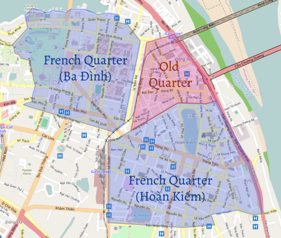

Ha Noi City
Hanoi is the capital of Vietnam and the country's second largest city by population. The population in 2015 was estimated at 7.7 million people. The city lies on the right bank of the Red River. Hanoi is 1,760 km (1,090 mi) north of Ho Chi Minh City and 120 km (75 mi) west of Haiphong.
Hanoi is sometimes dubbed the "Paris of the East" for its French influences. With its tree-fringed boulevards, more than two dozen lakes and thousands of French colonial-era buildings, Hanoi is a popular tourist destination.
The tourist destinations in Hanoi are generally grouped into two main areas: the Old Quarter and the French Quarter(s). The "Old Quarter" is in the northern half of Hoàn Kiếm District with small street blocks and alleys, and a traditional Vietnamese atmosphere. Many streets in the Old Quarter have names signifying the goods the local merchants were or are specialized in. For example, "Hàng Bạc" (silver stores) still have many stores specializing in trading silver and jewelries.
Two areas are generally called the "French Quarters": the governmental area in Ba Đình District and the south of Hoàn Kiếm District. Both areas have distinctive French Colonial style villas and broad tree-lined avenues. The political center of Vietnam, Ba Đình has a high concentration of Vietnamese government headquarters, including the Presidential Palace, the National Assembly and several ministries and embassies, most of which used administrative buildings of colonial French Indochina.
The One Pillar Pagoda, the Lycée du Protectorat and the Ho Chi Minh Mausoleum are also in Ba Dinh. South of Hoàn Kiếm's "French Quarter" has several French-Colonial landmarks, including the Hanoi Opera House, the Sofitel Legend Metropole Hanoi hotel, the National Museum of Vietnamese History (formerly the École française d'Extrême-Orient), and the St. Joseph's Cathedral. Most of the French-Colonial buildings in Hoan Kiem are now used as foreign embassies.
Since 2014, Hanoi has consistently been voted in the world's top ten destinations by TripAdvisor. It ranked 8th in 2014, 4th in 2015 and 8th in 2016. Hanoi is the most affordable international destination in TripAdvisor's annual TripIndex report. In 2017, Hanoi will welcome more than 5 million international tourists.